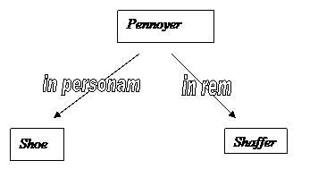

Civil
Procedure Class Notes
On Thursday, we wound up Shoe. Shoe introduced our modern concept of personal jurisdiction, which involves “minimum contacts” and “traditional notions of substantive justice and fair play”.
Now we’ll look at cases that develop and interpret the Shoe model.
To review, what were International Shoe’s contacts?
- “large volume of interstate business”
- “systematic and continuous” contacts
- “the right to resort to the courts”
- relatedness – “the obligation arose out of activities” – e.g. the automobile accident, where the contact is 100% related to the claim stemming from that accident
One thing we didn’t point out about Shoe last week: Justice Black dissented, and said that in the area of taxation, states should be able to tax businesses coming into their territory. Black wasn’t as concerned about the jurisdiction implication on the facts of this case. Black was concerned about the language that the court used: “substantive justice” and “fair play” are not in the Constitution or the Fifth or Fourteenth Amendments, yet these are going to be the tests the Court will use going forward.
The cases so far, in brief
- Pennoyer asks: Is it there?
- Shoe asks: Is it fair?
This opinion came down in 1977. Shoe was in 1945. We’re jumped forward in time. That’s important because we’ll go back and pick up cases that came up in the interim, but Stevie Y. will organize the cases thematically rather than strictly chronologically.
We’ve
talked a lot about general jurisdiction: everybody, including corporations, can
be sued somewhere. For example,
if the company was incorporated in
Greyhound
was incorporated in
Why
was there any question about suing Greyhound in
Shareholder Derivative Action
A shareholder sues on behalf of the corporation. He sues the officers and directors for breach of their fiduciary duty. You must also have the corporation as one of the defendants.
So it’s:
Shareholder (Heitner)
v.
Officers & Directors of the Corporation (including Shaffer),
plus the Corporation itself (Greyhound)
It turns out that Heitner owned just one share.
Greyhound is just a nominal defendant, but the real dispute is against the officers and directors.
Why would Heitner be willing to be the plaintiff in this lawsuit? I mean, he only has one share! There must be some incentive for him to be the plaintiff here.
Lots of these things settle, and the settlements often have a little something in them for the named plaintiff.
Where
are all these people from? Greyhound is
headquartered in
So
the lawsuit is filed in the Delaware Court of Chancery. The question is not whether
Why doesn’t Shoe answer this question? To what does the holding of Shoe apply? Shoe seems to deal with in personam jurisdiction rather than in rem jurisdiction.
The present case is about in rem jurisdiction, therefore, on its face, Shoe doesn’t seem to apply to Shaffer.

So
the
What
allows
In Pennoyer, stuff that’s in the state is under the jurisdiction of the state.
What
about the note cases after Pennoyer? How about Harris v. Balk? We find that a debt is going to be located for in rem purposes
wherever the debtor travels! This is
what gives us the law for the present case. The question is, “Where is intangible property located?” The
Pennoyer + Harris = if we attach the property at the start of the lawsuit, and the property is located within the jurisdiction of the forum, then the forum has in rem jurisdiction.
The state issues stop orders so the stock can’t be sold. So in the old way, the state is all set to have jurisdiction in rem against the 28 dudes.
“Shoe Rules Everything Around Me”
Now, the Court says that Shoe rules everything. What happens to Harris v. Balk? It’s explicitly overruled! However, the basic principles of Pennoyer are not overruled.
What’s the rationale? Jurisdiction “over a thing” is sort of a euphemism for jurisdiction “over the interests of a person in a thing”. Everything is owned by somebody, so whatever or wherever the property is, we’re really trying to get power over the person through their stuff.
Is the location of the stuff relevant anymore? The test of Shoe is “minimum contacts” such that the suit does not offend the notions of “fair play” and “substantial justice”. So the location of the stuff is relevant in so far as it is a contact. In rem gave property a special status; Shoe says that property is just another contact, nothing special. We’ll just add it into the mix.
A hypothetical
Say
a relative in
Under
Pennoyer, would the
Under
Shoe and Shaffer, we consider the volume and connectedness of our
contacts with
The Court says that it would be unusual for a state not to have jurisdiction in a controversy over some land in a state, because that land is what it’s all about and would constitute sufficient contacts.
After Shaffer, we will still see courts talking about in rem and quasi in rem. The law says that all assertions of jurisdiction must be made according to Shoe. Shoe, in turn, encompasses in personam, in rem, and quasi in rem.
Under Shoe, you don’t need to attach property to satisfy Constitutional jurisdictional principles. State law might establish other requirements when you file a lawsuit over some property. In practice, you really should attach the property.
Change the factual pattern: let’s say you get into
a car accident in
More on Shaffer next time
For tomorrow, read McGee and Hanson.